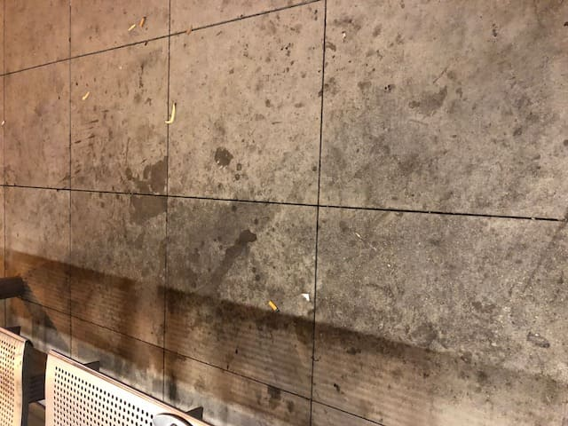
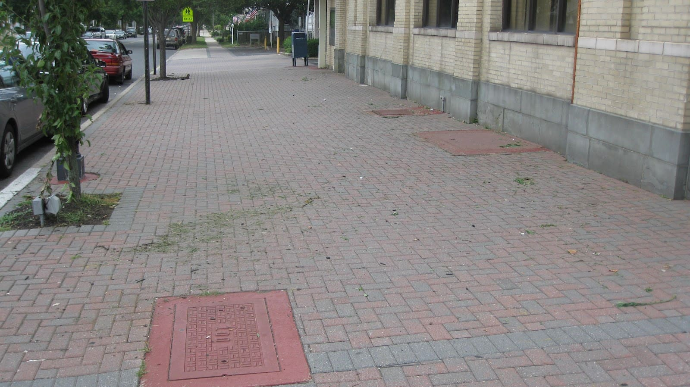
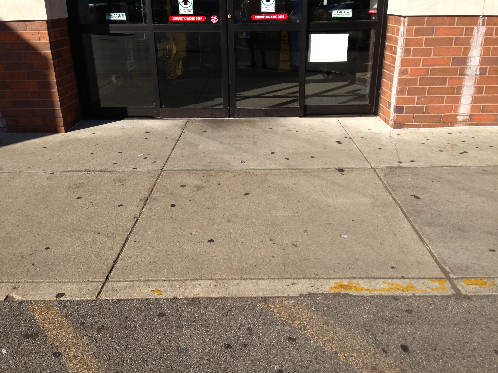
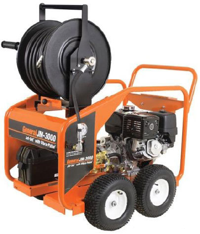
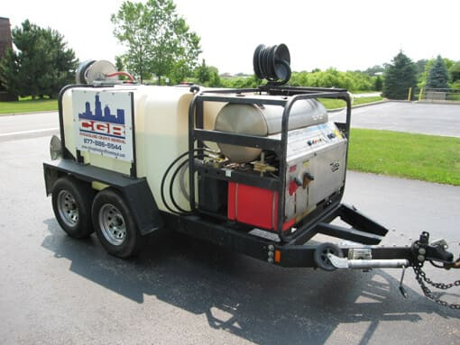
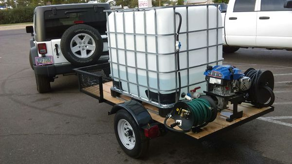
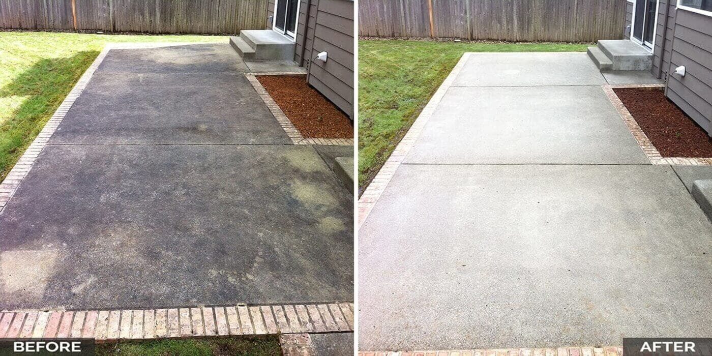
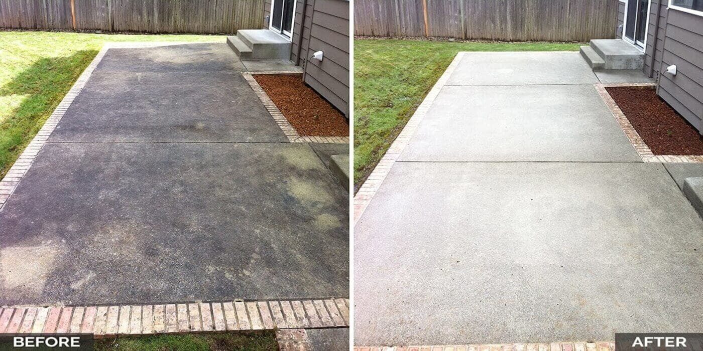

¿No te gusta lavar tus Veredas?
Programa de Limpieza de Veredas surge con la necesidad de establecimientos y particulares que prefieren disponer de sus Veredas limpias con regularidad cuantificable y pactada. Nuestro objeto es brindar un servicio de lavado de veredas rápido, eficaz y eficiente.
  ¿Cómo lo realizamos?
Para realizar el Lavado de las Veredas, procedemos de la siguiente forma:
1-Aprobada la zona de trabajo, se conforma un presupuesto según la magnitud de las veredas a hidrolavar.
2- Una vez aprobado, se dirige una de nuestras camionetas con equipos de Hidrolavado integrados, al lugar físico involucrado y realiza la limpieza y lavado de las veredas. Nuestro sistema de trabajo nos permite llevar un registro de las limpiezas realizadas en tiempo real y organizadamente.
  ¿Cuales son sus beneficios al contratar nuestro servicio de lavados de veredas?
Mejoramos su imagen. Ahorramos el tiempo y/o dinero que invierten en mantener sus veredas. Ningún problema legal, entregamos facturas cada mes por el total de los servicios. Combatimos problemas de seguridad, haciendo un servicio puertas adentro. Disponemos de métodos de pagos modernos como pago electrónico, depósito bancario, rapipago o pagofácil.

 
